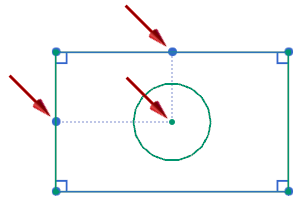

Rectangle constraints enhancement
Rectangle constraints enhancement
What is it?
You can now infer constraints from the mid points to the center of rectangles when you use the From Center option. You must select one of the following points for the center of the rectangle:
-
Point
-
End Point
-
Arc Center

Where do I find it?
|
Application |
Modeling, Drafting, Shape Studio, Sheet Metal |
|
Toolbar |
(Modeling, Shape Studio, Sheet Metal) Direct Sketch→Rectangle (Sketch task environment and Drafting) Sketch Tools→Rectangle |
|
Menu |
(Modeling, Shape Studio, Sheet Metal, Drafting) Insert→Sketch Curve→Rectangle (Sketch task environment) Insert→Curve from Curves→Rectangle |
|
Location in dialog box |
Rectangle Method group→From Center |